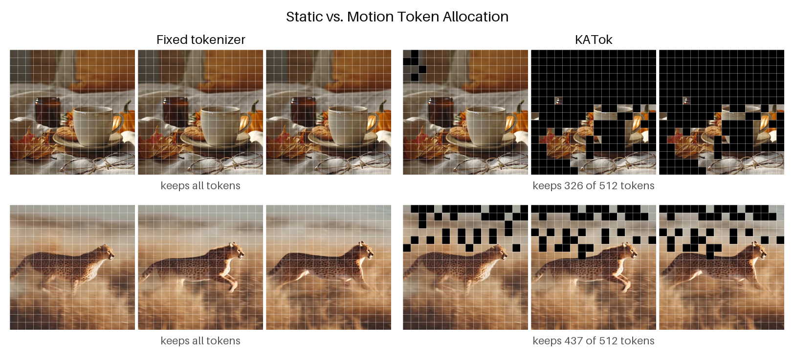
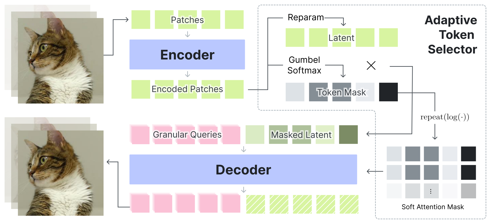
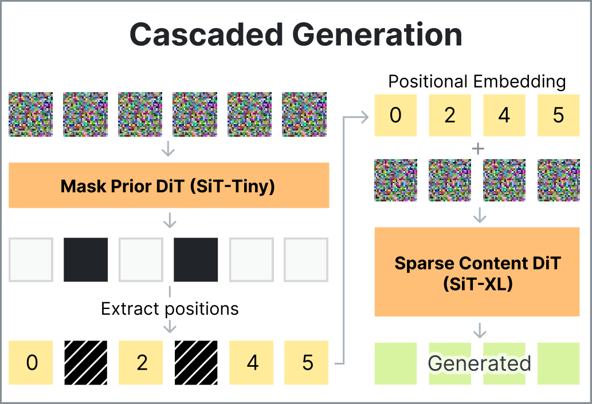
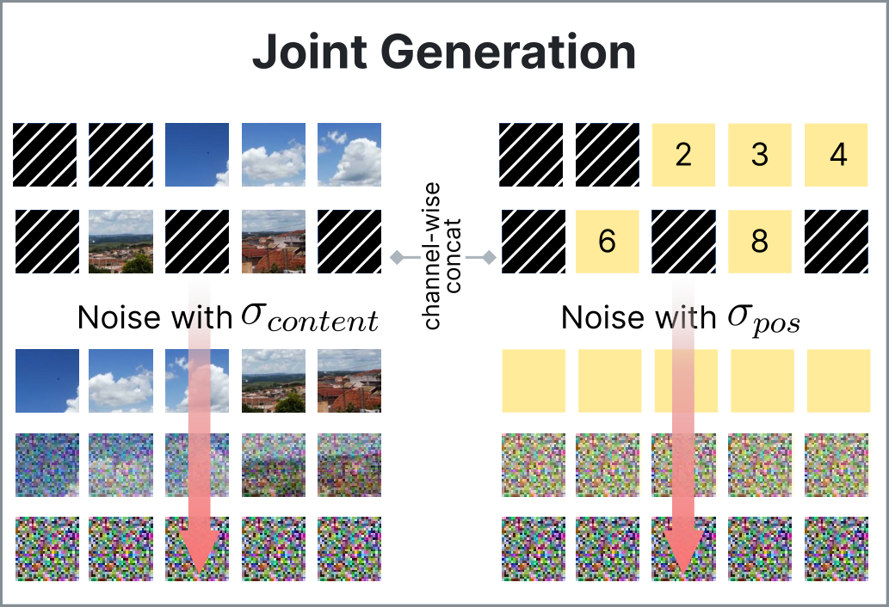
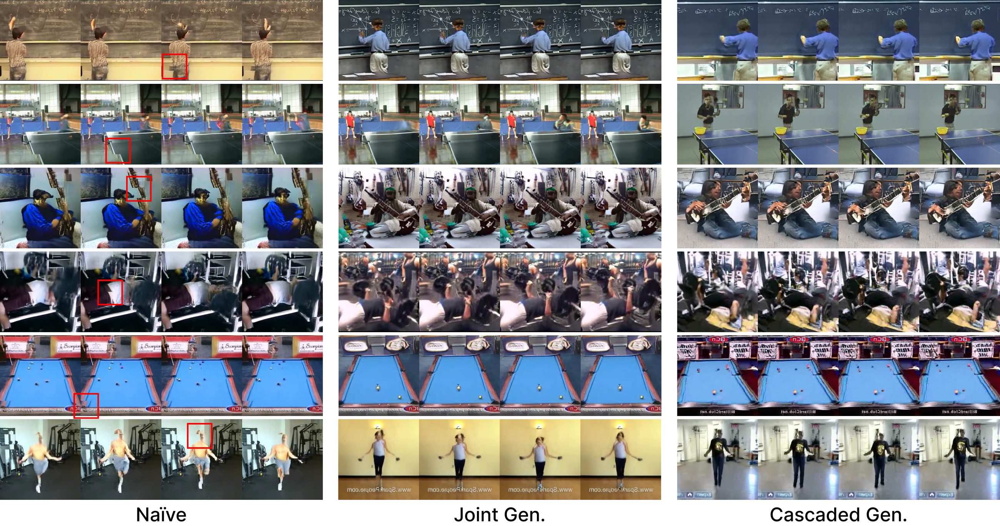

Tokens scale with H × W × T
The latent grid grows with resolution and duration, regardless of how much new information each patch contains.
ECCV 2026
Kakao Corp. · †corresponding author
A static background, a repeated frame, and a fast-moving object do not carry the same amount of information. Yet fixed-ratio video VAEs encode them with the same latent grid, so token count keeps scaling with space and time even when many regions are redundant.

The latent grid grows with resolution and duration, regardless of how much new information each patch contains.
Variable-length tokenizers can expose a token count, but selecting the right count per sample often needs search or extra overhead.
Adaptive tokenization should remove redundant tokens automatically while preserving enough structure for reconstruction and generation.
KATok leaves the VAE pipeline intact, but adds one learned decision at the latent bottleneck: for each encoded token, should it be kept or dropped?

The selector predicts the latent posterior and keep/drop logits from the same encoder embedding, so sparsity is learned with the representation rather than applied after encoding.
KATok also uses asymmetric patching: the encoder tokenizes videos coarsely with 16²×8 patches, while the decoder reconstructs on a finer 8²×4 query grid. The latent set stays compact, but reconstruction can still recover finer detail.
Training. Gumbel-Softmax keeps the token mask differentiable, and the decoder receives it as a soft attention mask while a sparsity loss rewards compact token sets.
Inference. Hard masks remove redundant tokens before decoding, with the corresponding attention mask blocking dropped tokens in decoder attention.
This example is a 256²×16 clip encoded with 370 tokens in total: 368 content tokens plus 2 register tokens, reaching 30.05 PSNR.
Black tiles are dropped latent patches. KATok retains tokens around motion and detailed regions, while static or homogeneous areas are aggressively compressed.
On Panda-70M validation, KATok improves reconstruction metrics while using far fewer active tokens than fixed or search-based baselines in the same continuous-token VAE family.
At 256²×16, KATok encodes each video with 366 active tokens on average.
| Method | Resolution | #Tokens | Channels | Comp. ↑ | PSNR ↑ | LPIPS ↓ | SSIM ↑ | rFVD ↓ |
|---|---|---|---|---|---|---|---|---|
| OmniTokenizer-VAE | 256²×17 | 5120 | 8 | 96 | 28.10 | 0.05 | 0.88 | 7.84 |
| ElasticTok-KL | 256²×16 | 3845.56 | 8 | 102.25 | 30.52 | 0.06 | 0.91 | 12.37 |
| KATok | 256²×16 | 366.24 | 64 | 134.21 | 31.24 | 0.04 | 0.94 | 5.12 |
| OmniTokenizer-VAE | 512²×33 | 36864 | 8 | 96 | 24.07 | 0.06 | 0.80 | 16.85 |
| KATok | 512²×32 | 1554.24 | 64 | 253.00 | 33.23 | 0.05 | 0.95 | 6.40 |
Panda-70M validation. Comp. is H·W·T·3 / (#tokens · channels); #Tokens is the average active-token count for adaptive methods.
KATok uses the learned VAE as the tokenizer for downstream flow-matching video generation. After token dropping, the generator must recover not only what each sparse token contains, but also where it belongs.
Why positions matter
Adaptive tokenization removes redundant grid cells, so sparse latent tokens no longer carry an implicit dense layout. For generation, KATok must model both the latent content and the positions where those latents should be decoded.
Position-aware sparse generation
KATok studies two variants: a cascaded mask prior that predicts active positions before content generation, and a joint variant that denoises content and coordinates together.


Content-position misalignment
A content-only flow model can produce plausible sparse token values while placing them at the wrong spatio-temporal locations, leading to unstable boundaries and temporal inconsistencies.

Using the same tokenizer and SiT-XL content model (686.29M parameters) on UCF-101, gFVD improves from 95.69 with naive sparse flow matching to 73.16 with joint content-position generation (686.59M total) and 61.53 with cascaded mask-prior conditioning (694.65M total, including an 8.3M mask prior).
Token count can also modulate generation: higher budgets produce richer motion and detail. Each grid shows 16 unconditional SkyTimelapse samples from the cascaded model — same settings, only the token budget differs.
First 16 samples of each budget, no curation. Low budgets yield calm, mostly clear skies; higher budgets bring denser cloud structure and stronger motion.
@inproceedings{lee2026katok,
title = {Keep-or-Drop? Adaptive Tokenizer for Compact Video Representation},
author = {Lee, Yeonkyeong and Go, Hyunsung and Kim, Jongmin and Lim, Sewoong and Lee, Donghoon},
booktitle = {European Conference on Computer Vision (ECCV)},
year = {2026}
}